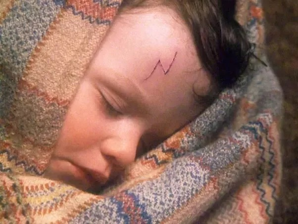
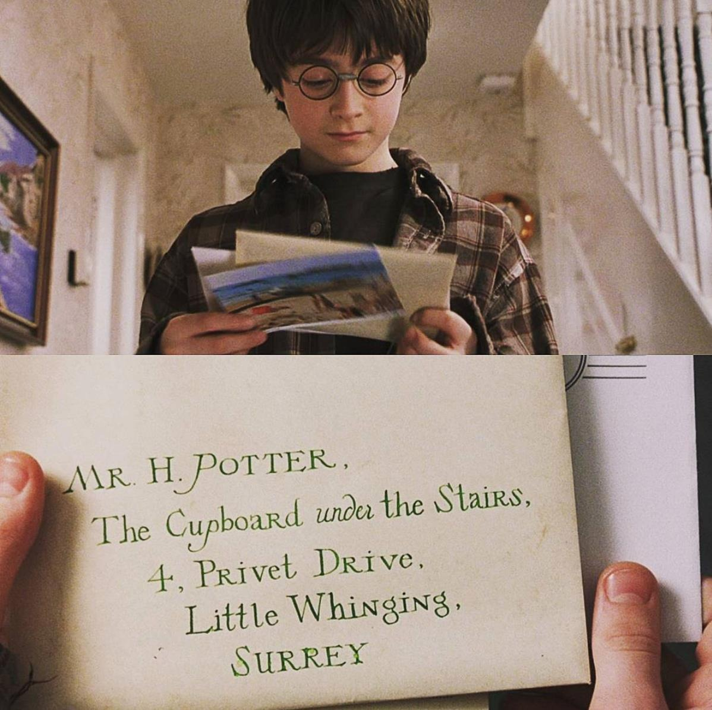
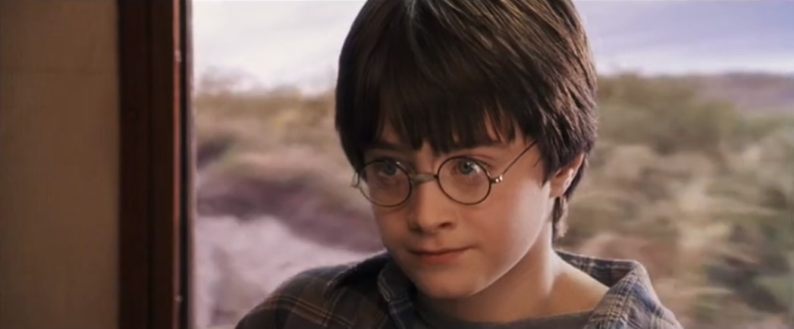
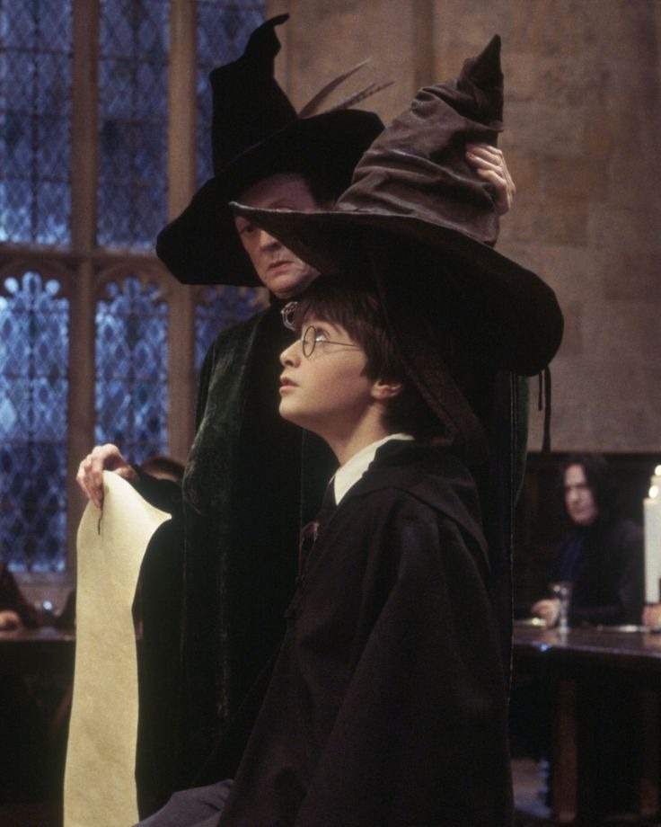
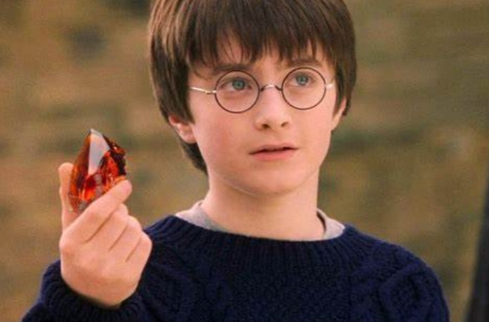
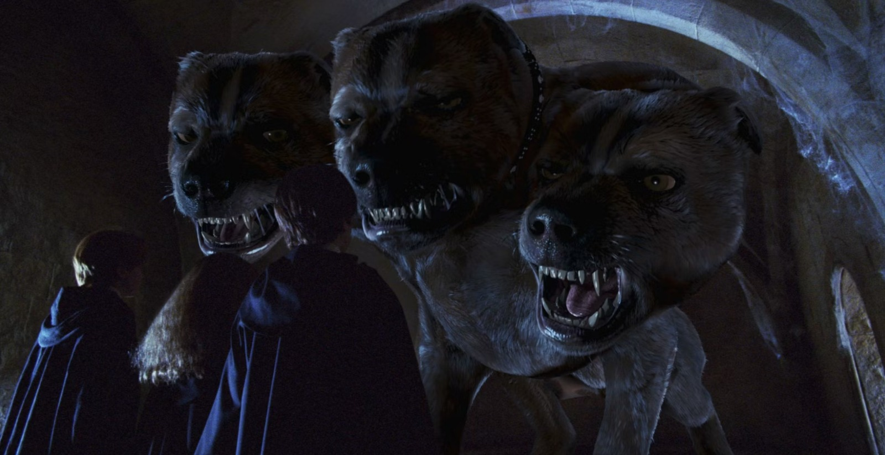
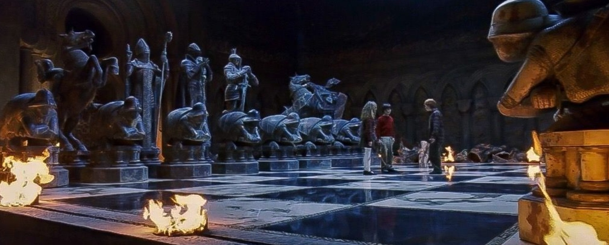
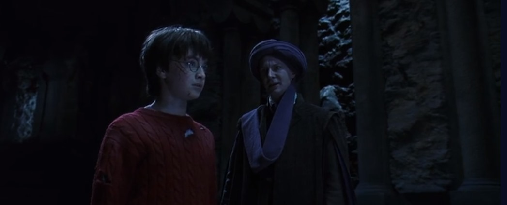
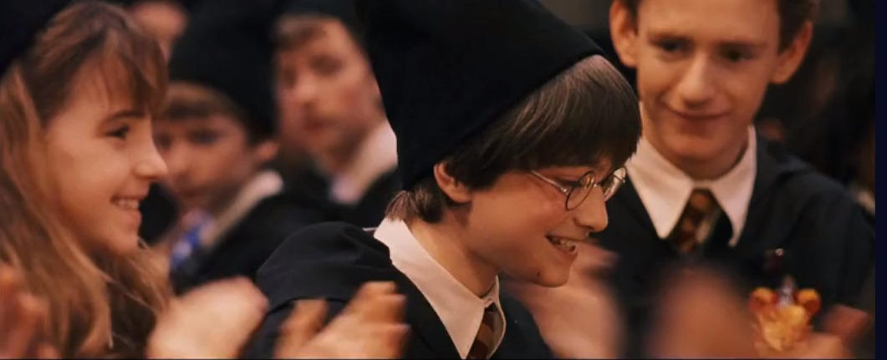

The Enchanted World of Harry Potter
1. The Boy Who Lived
The story begins with the introduction of Harry Potter, an orphaned baby who survived an attack by the dark wizard Voldemort...
2. The Invitation to Hogwarts
On his eleventh birthday, Harry receives a letter from Hogwarts School of Witchcraft and Wizardry...
3. Meeting Ron and Hermione
On the Hogwarts Express, Harry meets Ron Weasley and Hermione Granger, who become his closest friends...
4. The Sorting Hat:
At Hogwarts, students are sorted into one of four houses: Gryffindor, Slytherin, Ravenclaw, or Hufflepuff. The Sorting Hat places Harry, Ron, Hermione, and other first-year students into their respective houses, with Harry ending up in Gryffindor.
5. The Philosopher's Stone
Harry learns about the Philosopher's Stone, a legendary magical object that grants immortality. He discovers that someone is attempting to steal it, and he, Ron, and Hermione set out to stop them, facing numerous obstacles along the way.
6. Encounter with Fluffy
In their quest to protect the Philosopher's Stone, Harry and his friends encounter Fluffy, a giant three-headed dog guarding the trapdoor leading to the stone. This encounter tests their courage and problem-solving skills.
7. The Chess Game
To reach the Philosopher's Stone, Harry, Ron, and Hermione must pass through a series of magical obstacles, including a life-sized chessboard. Ron sacrifices himself in a game of wizard's chess to allow Harry and Hermione to continue.
8. The Mirror of Erised
Harry discovers the Mirror of Erised, which shows the viewer their deepest desires. Harry becomes obsessed with the mirror, longing to see his deceased parents. Dumbledore advises him on the dangers of dwelling on the past.

9. The Final Confrontation
Harry confronts Professor Quirrell, who has been possessed by Voldemort, in the chamber where the Philosopher's Stone is hidden. With the help of Dumbledore's protection and his own bravery, Harry prevents Voldemort from obtaining the stone.
10. Victory and Celebration
Harry and his friends successfully prevent Voldemort from obtaining the Philosopher's Stone. As a reward, Gryffindor House wins the House Cup, and Harry returns to the Dursleys for the summer, knowing that he has a place where he truly belongs.
